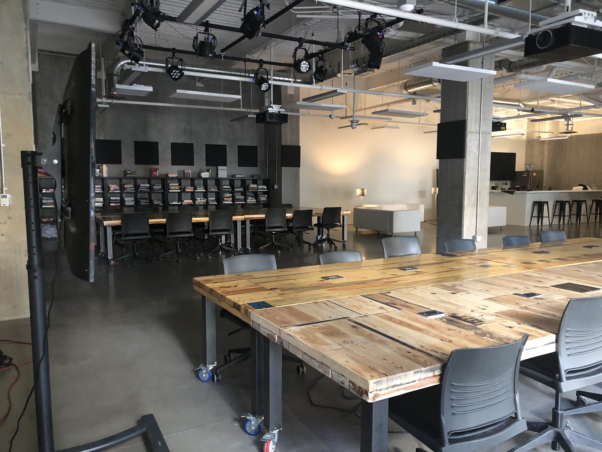

Studio Handbook
This handbook covers useful information about CMCI Studio spaces, rules, technology, and equipment. It is recommended that all students and faculty read through this page and refer to it often. Send any questions, comments, or suggestions via email or slack (@rjduran).
Note this is a living document and is constantly being updated.
West Studio

Features:
- Secure 24/7 Access
- Large tables and chairs
- Kitchen
- AV Editing Workstation
- Photo Studio
- Configurable performance space
- Lighting Grid
North Studio

Features:
- Secure 24/7 Access
- Workshop
- Rapid Prototyping
- Large tables and chairs
- Printers
- Laptops
- VR Equipment
WIFI
High speed WIFI access is available in both studio spaces. The password for access is posted on the wall in each room.
| Access Points (SSID) | Location |
|---|---|
| CMCI-STUDIO-1 | West Studio |
| CMCI-STUDIO-2 | North Studio |
Studio Rules
- The Studio space is a 24/7 facility.
- The Studio masters program is one of many activities that take place in the space.
- You will have an individualized FOB to enter the building. Contact faculty asap if your FOB goes missing.
- Food and drinks are allowed, but alcohol is NOT permitted on the premises.
- Bathrooms are through the door on the east side of the courtyard. You need a FOB to access.
- The kitchen is for your use. But you are expected to clean dishes etc.
- If you are the last person here, you are expected to turn off the lights and ensure that all doors are secure before you leave.
- The courtyard is a shared space with all the other building tenants.
- Treat the space as you would your home or office. You are expected to clean up after yourself.
- Do not stream or download illegial content on CMCI Studio network.
General Safety
TODO
Printers
To access the paper printer you need to be connected to one of the local wifi access points shown above. The following printers are available for use.
| Make/Model | Type | Location | Website |
|---|---|---|---|
| Brother MCF-L6800DW | Black/White | North Studio | Support |
MacOS:
- Add the printer by going to System Preferences > Printers & Scanners and click the + sign. You should get the option to add the "Brother MCF-L6800DW" printer.
- After doing so you should be able to send jobs to print.
Projectors
Room Lights
Lighting Grid
Mobile Displays
Photo Studio
Equipment
insert camera list here
Media Workstations
AV Editing
VR & Rendering
Room Cameras
Streaming Content
VR Equipment
Laptops
Usage Policy
The Critical Making Studio has Razer Blade (14") laptops for use with advanced graphics and media applications such as VR, 3d modeling, and programming.
- The laptops are to remain at the studio at all times. No exceptions.
- Personal files should be backed up using USB drives and/or a cloud based service such as Dropbox or Google Drive. Do not expect your files to be available on any one laptop the next time you use it.
- Please report any technical issues to RJ asap.
Login
The laptops are setup to be identical with following user account and installed software.
Account: Student
Password: student
Software
- Rhino 5 + Grasshopper
- Fusion 360
- Unity 5.6.4
- Unity 2017.2.1
- Unity 2017.3.0
- Steam
- SteamVR
- Maya 2018
- Adobe Creative Cloud - Login Required
- Blender
- Meshmixer
- Google Chrome
- Firefox
- Visual Studio 2017 Community
- Ultimaker Cura
- Screencast-O-Matic
- Notepad++
- Meshlab
- DAZ 3D
File Server
The Critical Making Studio has a local network shared folder for transferring large projects between computers. To access it you must be on the STUDIO-2.4 or STUDIO-5 network. Follow the instructions below to connect to the shared folder.
Server Use
- Make sure you keep backups of your projects on your local machines in case the server is ever down or someone deletes a folder.
- Be aware that once you delete a folder from the server its gone forever.
- You may make any folders you want or use any of the folders with your name.
Local Access
On MacOS:
- Go > Connect to Server (CMD + K)
- Enter:
smb://CMCI_STUDIO/cm_share - Click Connect
- Enter Username and Password when prompted.
- The shared folder should appear in the Finder. If it doesn’t, go to Go > Network (SHIFT+CMD+K) and you will see the "CMCI_STUDIO" server with "cm_share" available.
On Windows:
- Open Windows Explorer and choose Tools > Map Network Drive. Choose a drive number from the Drive drop-down menu.
- Enter:
\\CMCI_STUDIO\cm_share - Click Finish
- Enter Username and Password when prompted.
- The shared folder should appear in the Windows Explorer as a network drive.
Remote Access
On MacOS:
- Go > Connect to Server (CMD + K)
- Enter:
https://cmcistudio.synology.me:5006 - Click Connect
- Enter Username and Password when prompted.
- The shared folder should appear in the Finder. If it doesn’t, go to Go > Network (SHIFT+CMD+K) and you will see the "cmcistudio.synology.me:5006" server with “cm_share” available.